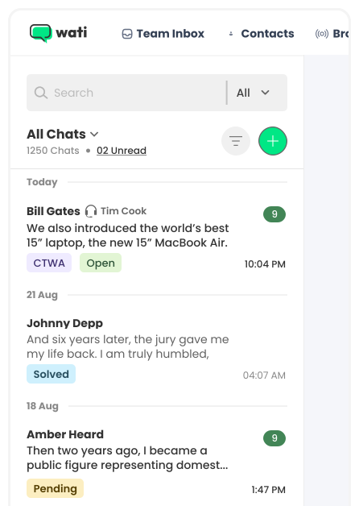
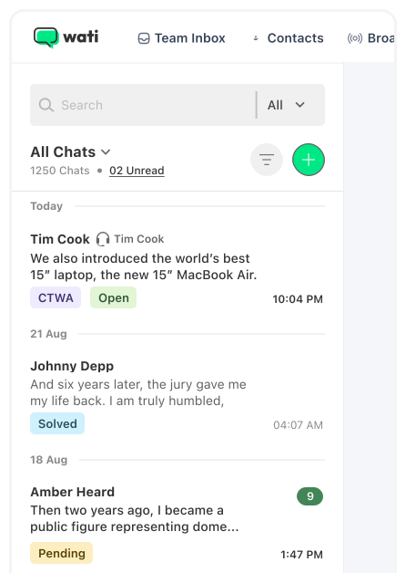
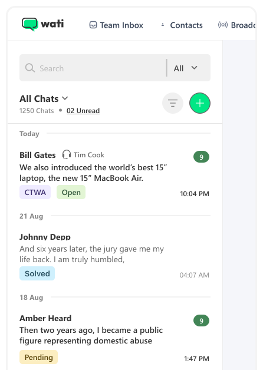
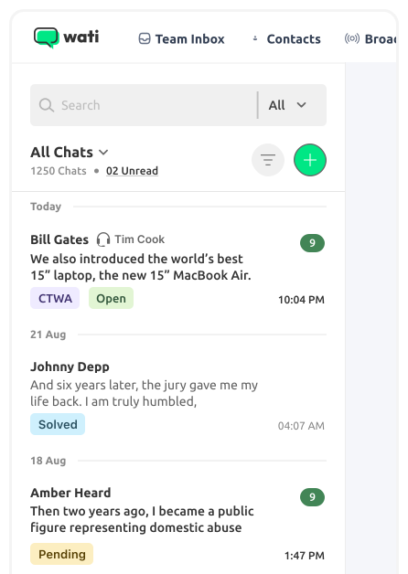
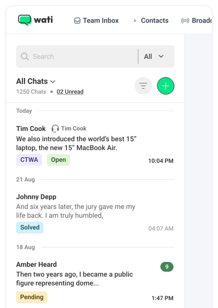

Standardizing
wati’s product
Font Stack*
** A font stack is an ordered list of fonts that
contains a primary font and an optional fallback font
or fonts
Poppins
Designed by
Indian Type Foundry,
Jonny Pinhorn
Aa
4 styles
Poppins
Aa
4 styles
Inter
Aa
4 styles
Roboto
Aa
4 styles
Muli
Aa
4 styles
Montserrat
Aa
4 styles
Lato
Aa
4 styles
Poppins
Aa
4 styles
Inter
Aa
4 styles
Roboto
Aa
4 styles
Muli
Aa
4 styles
Montserrat
Aa
4 styles
Lato
Aa
4 styles
Poppins
“Look closely at the most
embarrassing details and
amplify them.”
— Brian Eno
$ % * # ₹ @
1 2 3 4 5 6 7 8 9 10
Weight
Line-height
Team Inbox
What the Font is a system-ui font?
font-family {-apple-system,BlinkMacSystemFont,Segoe UI,Roboto,Oxygen,Ubuntu,Cantarell,Fira Sans,Droid Sans,Helvetica Neue,sans-serif;}
| OS | Font-family |
|---|---|
| Windows | Segoe UI |
| MacOS & iOS |
SF Pro Text SF Pro Display SF UI Text (deprecated) SF UI Display (deprecated) Helvetica Neue (fallback) |
| Chrome OS & Android |
Roboto Noto Sans (fallback) Droid Sans (fallback) |
| Ubuntu | Ubuntu |
| OxygenOS | Oxygen |
| Firefox OS | Fira Sans |
“If I had never dropped in on that single course in college, the Mac would have never had multiple typefaces or proportionally spaced fonts. And since Windows just copied the Mac, it’s likely that no personal computer would have them.”
“Microsoft is committed to providing high-quality typography in its products. we use a font called Segoe UI in Windows 7, which is designed to be easy to read for people with low vision.”
“We wanted the font to be easy to read and use on screens of all sizes.”
“I'm really happy with the way Roboto has been received. It's now one of the most popular fonts in the world, and it's used by a wide variety of companies and organizations.”
"People don't think about fonts, but they care about the quality of typography. And if you give them bad typography, they care about it even more."
"Microsoft is "committed to providing high-quality typography in our products. We have a team of talented typographers who work hard to create fonts that are both beautiful and functional."
The Ubuntu Font Family was designed by Dalton Maag, a London based type foundry. The font is a humanist sans-serif typeface that was designed to be modern, legible, and friendly.
"I wanted to create a font that was both friendly and open, and yet also neutral and efficient. I think Roboto strikes a good balance between these qualities."
"The difference between good and great design is attention to detail, and that includes typography."
"Typography is a very important part of the user experience. It's one of the things that makes a product feel polished and professional."
The Ubuntu Font Family has been praised for its legibility and its ability to convey a sense of warmth and friendliness.. It has been widely adopted by the open-source community and is used by a variety of organizations, including Google, Mozilla, and Red Hat.
"Roboto is a versatile font that can be used for a wide variety of applications, from body copy to headlines. It's also very readable on screens, which is important in today's digital world."
Team Inbox
   For Developers
font-family {-apple-system,BlinkMacSystemFont,Segoe UI,Roboto,Oxygen,Ubuntu,Cantarell,Fira Sans,Droid Sans,Helvetica Neue,sans-serif;}
font-family {inherit;}
For Designers
Resources
Recommended Articles
& Special thanks to: